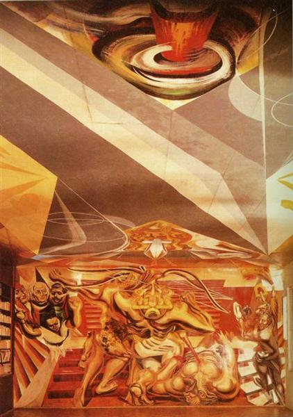
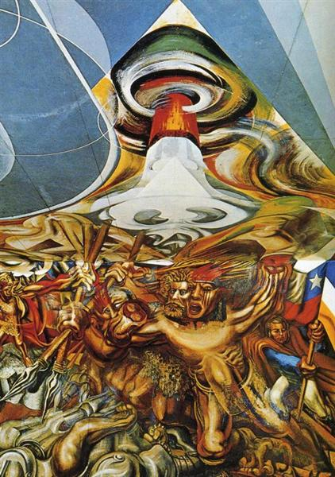

In 1941, after serving 8 months in prison for an assault on Leon Trotsky’s compound, world-renowned muralist and Stalinist David Alfaro Siqueiros was exiled to Chile under the supervision of the Mexican ambassador to paint a mural.1 His mural was to be created in the library of the Escuela Mexico, an elementary school gifted to the city of Chillán by Mexican president Cárdenas to aid with earthquake recovery.2 Siqueiros was one of three prominent Mexican muralists who approached the subjects of national history, conflict, and class struggle to create a unified post-revolutionary national identity.3 Upon viewing the long and narrow room, Siqueiros envisioned a mural bending perspective, with an unbroken canvas allowing images to cross the room through the ceiling, transcending the walls.4 He applied rounded shapes to the corners and aesthetically heightened the ceiling, which allowed compositional forms to interact with each other from across the room, producing a cinematographic effect as the spectator’s perspective shifts.5 Driven by ideas of Latin American solidarity ignited by the circumstances around his exile and artistic commission, Siqueiros’s mural, Death to the Invader, attempts to depict a shared Latin American history. Mexican revolutionaries and national symbolism line the south side of the room, while those of Chile adorn the north, with the common theme of resistance against the Spanish imperialism featuring prominently.6 In his mural Death to the Invader, David Alfaro Siqueiros juxtaposed Mexican and Chilean revolutionary figures and iconography to portray Mexican history as part of a continuous Latin American struggle against European colonization and its legacies.

Siqueiros fills the Mexican wall with anti-colonial revolutionary thematic content, utilizing allegories and symbolic figures from the nation’s history. The setting of the wall is the steps of an Aztec temple, likely the great temple in Tenochtitlán, which was disassembled by the conquistadors stone by stone to build a church.8 Standing tall on the steps is the central figure, Aztec emperor Cuauhtémoc, who defended Tenochtitlán from the Spanish, refusing to surrender the location of the Aztec treasure when defeated.9 Cuauhtémoc, wearing a mask, aims his bow at the cross-dagger above, a symbol of colonial oppression that was used by the Spanish to coerce gold from Indigenous people of Mexico.10 Underneath him, a bearded conquistador lies on his back with a lance piercing his chest.11 From the right and left, Hidalgo, Zapata, Morelos, La Adelita, Juárez, and Cárdenas, figures of revolution and reform, look on with fists clenched.12

The physical and thematic nature of the mural is constructed to highlight the cohesive Latin American narrative of struggle. Siqueiros argues for a thematic viewing and depiction of history, remarking that “I did not want to paint some facts about the history of the two countries, as important as these were. I wanted to paint the entire history, or at least the fundamental motor drive of the entire history of both peoples.”14 Accordingly, Siqueiros rounded the corners of the room with inserts to create an uninterrupted canvas where each wall looked, in his own words, “as though it were coming over from the opposite side of the room.”15 Upon entering the library, which measured 25 meters long by seven meters wide by six meters high, the two walls stand in parallel, with the longest distance between them. The volcano at the top of the Chilean wall and the fire atop the Mexican wall face each other across the abstract ceiling, symbolizing the nations’ respective national spirits. In the center of the Chilean wall, the figure of the Galvarino, arms mutilated by the Spanish, appears in motion, referencing his journey across the Andes to mobilize resistance against the colonial forces.16 Phantom limbs stab the conquistadores who lie below. The Chilean revolutionaries and leaders O’Higgins, Bilbao, Balmaceda, Lautaro, and Recabarren appear throughout the chaotic scene.17 The many motifs reflected across the room combined with the conceptual and compositional ‘oneness’ of the two different walls emphasize the thematic uniformity of the two walls despite difference in content. These elements together create the effect of a clear and resounding anti-imperial message present at any location in the room.
While Siqueiros composed the painting as an expression of the “historical simultaneity of [Chile and Mexico’s] struggle, for both are people of Latin America”, upon closer examination of the work and the context around its creation, the piece can be interpreted as an expression of communist activism against the capitalist and fascist legacies left behind by colonialism.18 Siqueiros viewed his art as a subordinate didactic outlet of his political activism, stating that “with me my art is a personal thing, but my party is a duty.”19 However, the conditions for his exile from Mexico stipulated that he would not engage in political activism, directly contradicting his Marxist artistic philosophy of art’s social obligation.20 Death to the Invader adheres to this agreement superficially, as he refrains from overtly using communist motifs seen in his other murals, instead focusing mainly on past figures of colonial resistance. This theme could be considered activism, as during the 1940s, Siqueiros was a subscriber of Popular Frontism, an ideology that argued for the employment of nationalist lexicon to build support for the Communist Party in the anti-fascist movement.21 Despite his restraints on overt political expression, Siqueiros still includes subtle nods to the ideas of class revolution and communist reform in the mural. Of the figures included, Emiliano Zapata, a Mexican revolutionary and proponent of far-reaching land redistribution, and Manuel Recabarren, a labor organizer and founder of the Communist Party of Chile, stand out as representatives of radical collectivist reform.22 While the subject matter depicted in the mural concerns history, Siqueiros notes that the mural is a “condemnation of invaders of all times.”23 Thus, the mural can be seen as a Latin American history of the continuing revolutionary struggle against Spanish imperialism and its legacies, namely the evils of capitalism and fascism. Siqueiros engaged in a covert reframing through Death to the Invader, channeling animosity towards past colonization against contemporary fascism and the bourgeoisie.
During his year of exile in Chillán, Siqueiros continued his political activism through his artwork. He maintained the revolutionary ethos of muralism long after others capitulated to their bourgeoisie patrons, using his art to impel “the offensive spirit of the public through presentation of the real combative facts of its history… as a living example for present and future activities.”24 Siqueiros not only united Chilean and Mexican history under the story of colonization, resistance, and reform, but also presented an exhortation to continue the march of progress into the future, following the example of Cuauhtémoc up the steps of the temple to strike the flaming sword pointed at him.
Bibliography
Buhle, Mari Jo, Paul Buhle, and Dan Georgakas. Encyclopedia of the American Left. 2nd ed. New York: Oxford University Press, 1998.
Cull, Nicholas John, David Holbrook Culbert, and David Welch. Propaganda and Mass Persuasion: a Historical Encyclopedia, 1500 to the Present. Santa Barbara, Calif.: ABC-CLIO, 2003.
David Alfaro Siqueiros. Image. 2025. World History: The Modern Era.
Fulton, Christopher. “Siqueiros’s Experimental Landscapes.” Zeitschrift für Kunstgeschichte 75, no. 1 (2012): 93–130. JSTOR.
———. “Siqueiros against the Myth: Paeans to Cuauhtémoc, Last of the Aztec Emperors.” Oxford Art Journal 32, no. 1 (2009): 67–93. JSTOR.
Garnett, W. “Mural Painting Heart of the Artistic Rebirth of Mexico in the 20th Century.” Artes de México, no. 5/6 (1954): 133–39. JSTOR.
Kahng, Rachel. “David Alfaro Siqueiros: Communist Before Artist.” Dartmouth Student Course Exhibits. Last modified Winter 2022. Accessed May 6, 2025. https://course-exhibits.library.dartmouth.edu/s/modernmexico/page/kahng.
Kilroy-Ewbank, Lauren. “The Templo Mayor and the Coyolxauhqui Stone.” Smarthistory. Last modified August 9, 2015. Accessed May 6, 2025. https://smarthistory.org/templo-mayor-at-tenochtitlan-the-coyolxauhqui-stone-and-an-olmec-mask/.
Leonard, Thomas M. “Mexican Muralists.” In Encyclopedia of Modern Latin America (1900 to the Present). Facts On File, 2017. Modern World History.
Patterson, Robert H. “An Art in Revolution: Antecedents of Mexican Mural Painting, 1900–1920.” Journal of Inter-American Studies 6, no. 3 (1964): 377–87. https://doi.org/10.2307/164913.
Riedinger, Edward, A. “Siqueiros, David Alfaro.” In Encyclopedia of Mexico: History, Society and Culture, edited by Michael S. Werner. London, UK: Routledge, 1998. Credo Reference.
Rochfort, Desmond. Mexican Muralists: Orozco, Rivera, Siqueiros. New York: Universe, 1994.
Rogo, Elsa. “David Alfaro Siqueiros.” Parnassus 6, no. 4 (1934): 5–7. https://doi.org/10.2307/771047.
Shaw, Lisa, and Stephanie Dennison. Pop Culture Latin America! Media, Arts, and Lifestyle. Santa Barbara, Calif.: ABC-CLIO, 2005.
Sifakis, Carl. “Leon Trotsky, Assassination of.” In Encyclopedia of Assassinations, Revised Edition. Facts On File, 2001. Modern World History.
Siqueiros, David Alfaro. Death to the Invader. 1942. Photograph. Accessed May 6, 2025. https://www.wikiart.org/en/david-alfaro-siqueiros/death-to-the-invader-1942.
“Siqueiros David (1898–1974).” In A Biographical Dictionary of Artists, Andromeda, 2nd ed., edited by Lawrence Gowing. London, UK: Windmill Books (Andromeda International), 1995. Credo Reference.
Smith, Bradley. Mexico: a History in Art. London: Phaidon Press, 1975.
Stein, Philip. Siqueiros: His Life and Works. New York: International Publishers, 1994.
Acknowledgements
I’m grateful for the help of Migyu Kim, Kate Rodgers, and Shloak Shah of the Writing Center. I’m also very appreciative of Ms. Frey’s responsiveness and assistance. I would like to thank Andrew Liu for amazing peer editing as well.